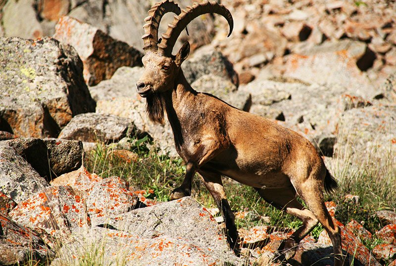
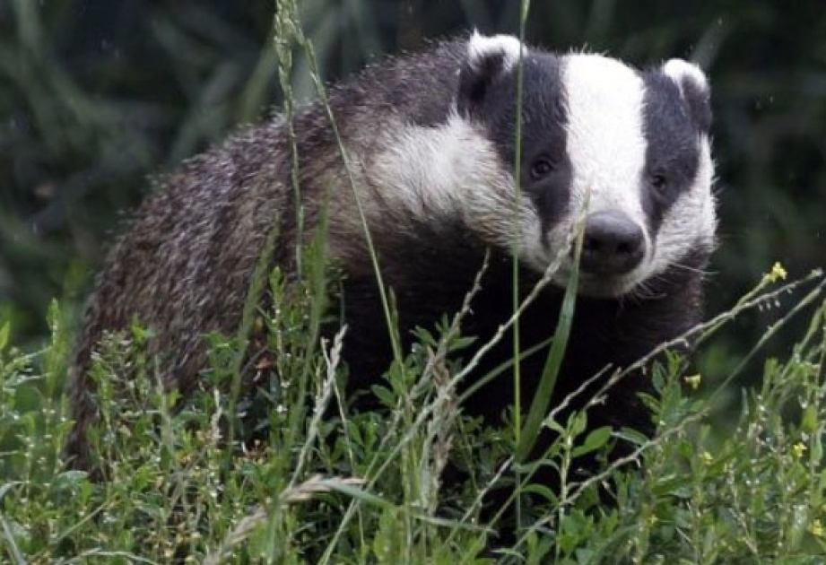
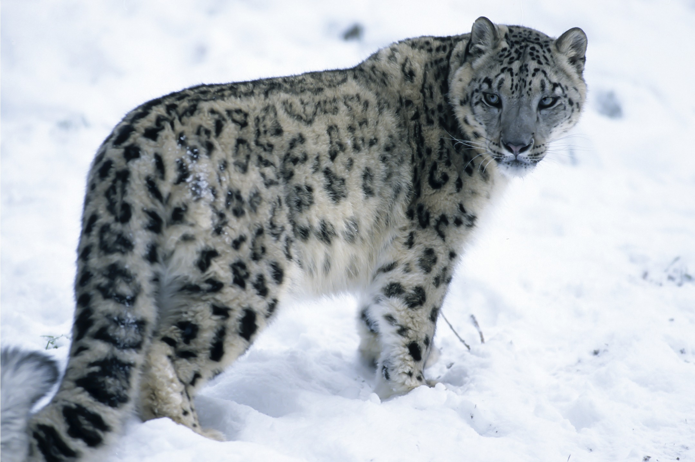
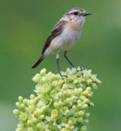
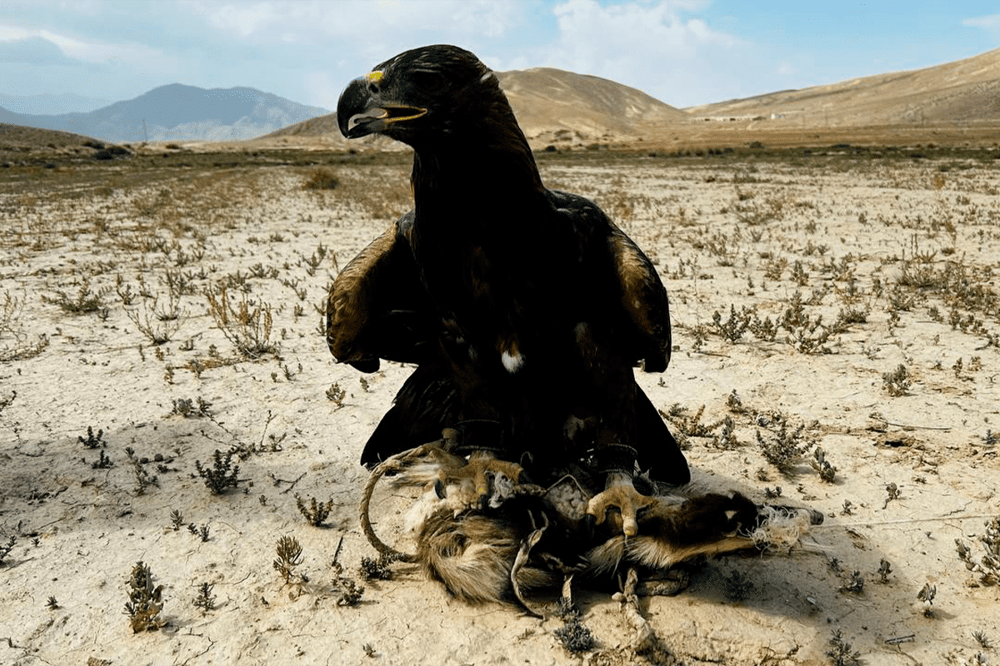

Фауна Государственного природного парка «Ала-Арча» уникальна благодаря резким перепадам высот (от 1600 до 4860 метров), что позволяет уживаться здесь обитателям степей, лесов и сурового высокогорья.
Всякая охота на территории парка строго запрещена.

Самый крупный представитель рода горных козлов, обитающий на скалистых склонах и альпийских лугах парка.

Всеядный хищник семейства куньих, ведущий ночной образ жизни в лесном поясе ущелья.

Редкий и охраняемый хищник, символ Кыргызстана. Обитает в высокогорье, занесён в Красную книгу.

Небольшая перелётная птица, гнездящаяся на открытых склонах и лугах парка в летний период.

Величественный хищник-орёл, парящий над ущельем. Национальная птица и символ Кыргызстана.